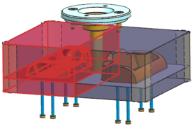
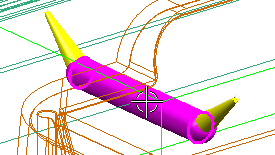
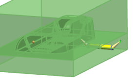
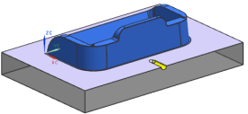
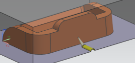
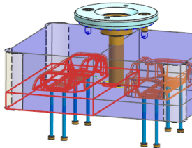
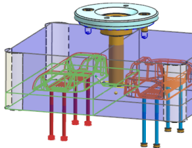
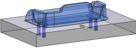

您将为模具镶块中的浇口以及流道创建腔体，为了简化选择，您将隐藏模架。
在装配导航器中，取消选中 cardholder_dm_037旁的复选框。
点击注塑模向导工具条上的腔体 。
在腔体对话框的模式组中，确保选择的是减去材料。
在目标组中，点击选择体。
从工作部件中选择各个型芯以及型腔镶块的一个实例。

在工具组的工具类型列表中选择组件。
点击选择对象。
选择两个浇口或流道中的其中一个。
选择组件时，您可以通过选择部件中的任意体来选择部件中的所有体。
NX 将会自动使用 false 引用集中对应的腔体。

选中只显示目标体和工具体复选框，或者清除它然后再次选中。

点击确定。
在 HD3D 工具面板中查看 Check-Mate 结果，以确认腔体特征通过了 Check-Mate 测试。
注意结果组中结果列的状态。
查看型芯和型腔部件。
从菜单栏中选择窗口→更多，在更改窗口对话框中，选择 cardholder_core_006.prt 或者 cardholder_cavity_002.prt。

|
注释 |
在下图中型腔镶块的显示属性被设置为33%的透明显示。 |

显示顶层装配部件。
点击腔体 。
在腔体对话框的目标组中，点击选择体。
选择型芯镶块的一个实例。

在工具组中，点击选择对象。
选择与您选择的型芯实例相交的全部四个顶杆。

选择引用集 FALSE。
点击确定。
查看型芯部件。

将 cardholder_top 设为工作部件，右击并选择显示。
(可选)为 cardholder_movehalf 子装配中的 cardholder_eja 以及 cardholder_crp 中的顶杆创建腔体，使用全部八个销作为工具。
选择文件→全部保存。